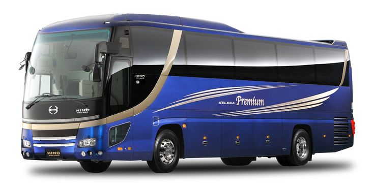

Packing
Pack comfortable clothes, a travel pillow, blanket, eye mask, earplugs, toiletries, medications, snacks, food, entertainment devices, a portable charger, and money and cards. Remember to pack light and carry essential items only.
Travelling by Bus
Travelling by bus is one of the most affordable and eco-friendly ways to reach your destination. Buses are available for short, medium, and long-distance travel, offering various services including AC and non-AC options, sleeper buses, and special services for overnight journeys.
Whether you are going on a weekend trip, a business trip, or a vacation, buses provide a comfortable and safe travel experience. Modern buses come equipped with amenities such as Wi-Fi, charging points, air conditioning, and onboard entertainment.
Why Choose Buses for Travel?
Buses are a great alternative to air and train travel, providing a more scenic journey at a lower cost. With routes to nearly every corner of the country, buses can take you directly to your destination, avoiding the hassle of airports or train stations. Additionally, buses are more environmentally friendly, contributing less to carbon emissions compared to cars or planes.
Travelling by bus also offers flexibility in terms of departure times, and many bus companies offer discounts for early bookings or regular travelers. If you’re looking for a comfortable, cost-effective way to travel, buses should be at the top of your list.